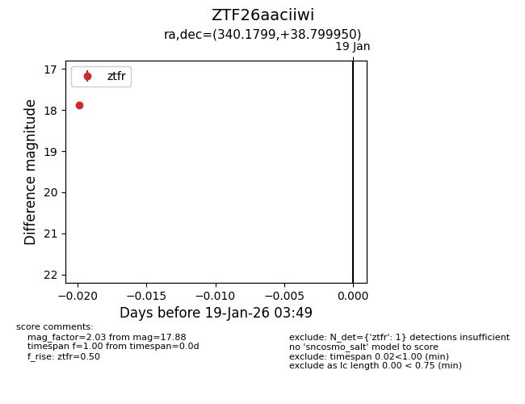
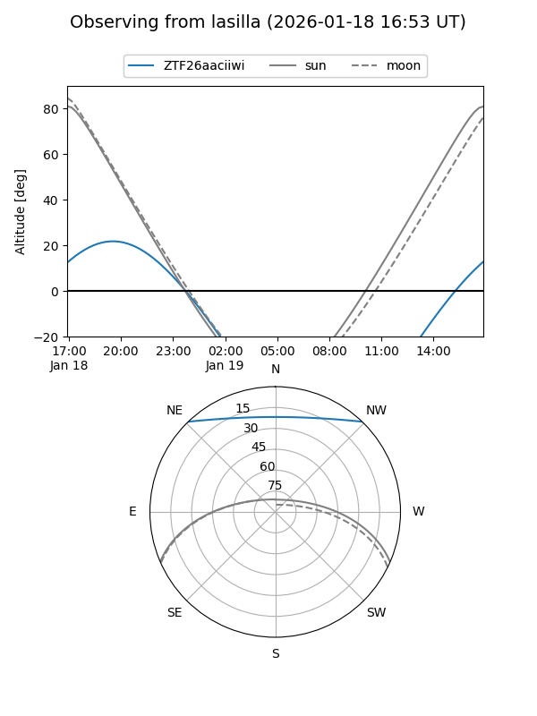
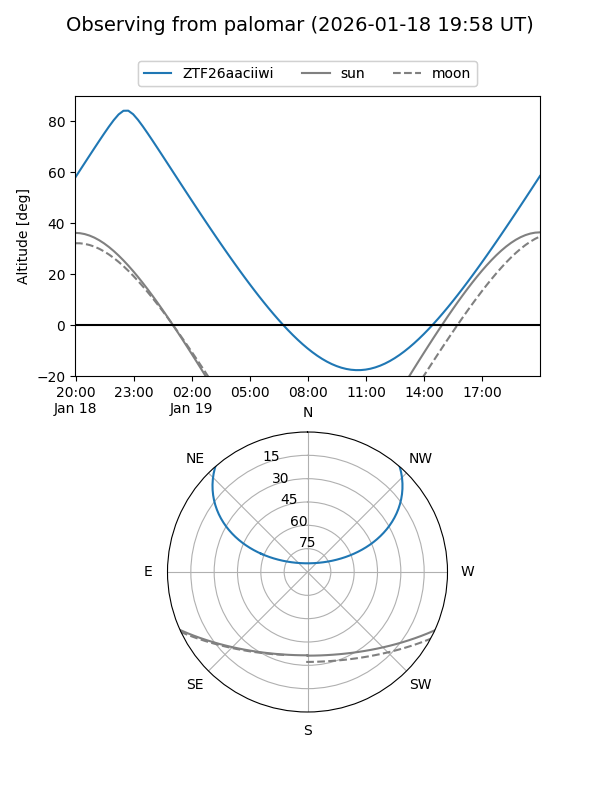

ZTF26aaciiwi
Target ZTF26aaciiwi at 2026-01-21 03:50
Aliases and brokers:
FINK: link
Lasair: link
ALeRCE: link
alt names
ZTF26aaciiwi (ztf,fink_ztf)
Coordinates:
equatorial (ra, dec) = 340.1799,+38.79995
equatorial (HMS+DMS) = 22:40:43.18,+38:47:59.82
galactic (l, b) = (96.7746,-17.34270)
Flags:
Photometry:
last ztfg=17.93, ztfr=17.88
1 ztfg, 1 ztfr detections
Lightcurve

Visibility


Additional plots